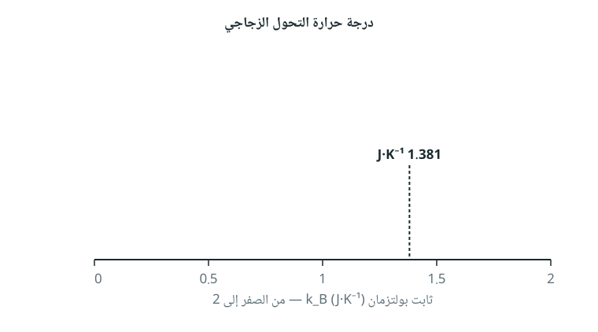

درجة حرارة التحول الزجاجي
Glass transition temperature
درجة حرارة التحول الزجاجي T_g هي الحرارة التي يتحول عندها البوليمر غير المتبلور من حالة زجاجية صلبة هشة إلى حالة مطاطية لدنة. وهي ليست نقطة انصهار، بل تحول في حركة السلاسل الجزيئية.
في البوليمر غير المتبلور تكون السلاسل متشابكة بلا ترتيب بلوري. وتحت T_g تكون حركة المقاطع السلسلية مجمدة فيبدو البوليمر صلباً هشاً. وفوق T_g تكتسب المقاطع حركة فيصبح مطاطياً. مثال: بولي ميثيل ميثاكريلات T_g ≈ 105 °C، ولهذا يكون صلباً في الاستعمال العادي. والبولي إيثيلين منخفض الكثافة T_g ≈ −120 °C، ولهذا يكون مرناً عند حرارة الغرفة. ومتعدد الإيثيلين تيريفتالات T_g ≈ 70 °C، ولهذا تُعقم قوارير المياه الساخنة دون أن تتشوه.
كيف تعمل الظاهرة؟
السلاسل البوليمرية الطويلة لا تتحرك كوحدة واحدة، بل تتحرك مقاطع منها حول روابط مفردة. وتحت T_g تكون الطاقة الحرارية أقل من حاجز الدوران حول هذه الروابط، فتتجمد المقاطع ويصبح البوليمر زجاجياً. وفوق T_g تكفي الطاقة الحرارية لتدوير المقاطع، فيصبح البوليمر مطاطياً. ولهذا تعتمد T_g على مرونة السلسلة وعلى وجود مجموعات قطبية وعلى الملدنات التي تفصل السلاسل وتخفض T_g.
العلاقة بالأرقام
T_g تظهر في DSC كخطوة في السعة الحرارية، وفي DMA كهبوط في معامل التخزين. وقاعدة تقريبية: كل زيادة 1% في الملدنات تخفض T_g بنحو 2–5 K. مثال: بولي فينيل كلوريد T_g ≈ 80 °C، وإضافة 30% ملدن تخفضها إلى نحو −10 °C، ولهذا يكون لدناً في الاستعمال.
مفاهيم متقاربة
يُفرَّق بين T_g وT_m: الأولى تحول ثانوي في غير المتبلور والثانية تحول أولي في البلوري. ويُفرَّق بين T_g ودرجة حرارة التشوه الحراري HDT، حيث الثانية تعتمد على الحمل المسلط. ويُفرَّق بين T_g في البوليمر الجاف والمبلل، حيث الماء ملدن يخفضها. وأخيراً يُفرَّق بين T_g المقيسة بالتبريد والتسخين، والفرق ناتج عن الاسترخاء البنيوي.
حدود التطبيق
T_g ليست قيمة واحدة دقيقة بل نطاق يعتمد على معدل التسخين وعلى تاريخ العينة. ولا تصف البوليمرات المتبلورة تماماً، حيث لا توجد حالة زجاجية. ولا تصف البوليمرات المتشابكة كثيفاً، حيث تقيد الشبكة الحركة وترفع T_g. وأخيراً لا تصف سلوك البوليمر تحت حمل طويل الأمد، حيث يحدث زحف حتى تحت T_g.

| الكمية | القيمة | المصدر |
|---|---|---|
| T_g لمتعدد الإيثيلين تيريفتالات | 70 °C | [1] |
المصادر
- 1 CODATA Value: Boltzmann constant — NIST — CODATA 2022 recommended values (2024). physics.nist.gov/cgi-bin/cuu/Value?k · اطُّلع عليه 2026-11-22
- 2 CODATA Value: molar gas constant — NIST — CODATA 2022 recommended values (2024). physics.nist.gov/cgi-bin/cuu/Value?r · اطُّلع عليه 2026-11-22
استشهد بهذا المصطلح
الصيغتان مبنيتان من بيانات الصفحة نفسها: العنوان والتاريخ ورابط النسخة المنشورة.
درجة حرارة التحول الزجاجي — Glass transition temperature. (2026). ديوان المعرفة — انفراد. https://infiradev.com/diwan/terms/term-glass-transition-temperature.html
@misc{term-glass-transition-temperature2026,
title = {درجة حرارة التحول الزجاجي},
titleaddon = {Glass transition temperature},
howpublished = {{ديوان المعرفة — انفراد} — مرجع علمي عربي},
year = {2026},
url = {https://infiradev.com/diwan/terms/term-glass-transition-temperature.html},
urldate = {2026-11-26},
note = {مراجعة علمية: hermes (مراجعة معتمدة 2026-11-26)}
}
راجعه: hermes (مراجعة معتمدة 2026-11-26) · 2026-11-26 · آخر تحديث 2026-11-22